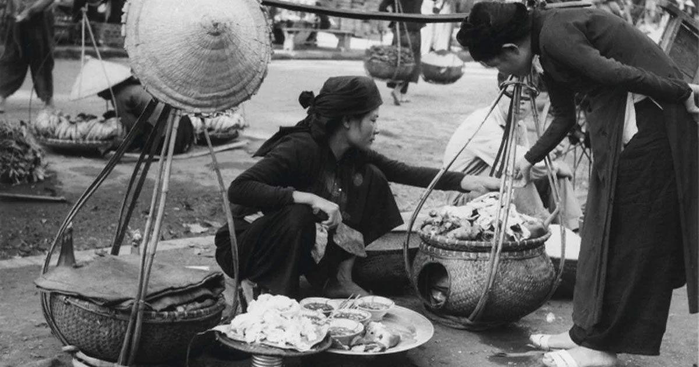
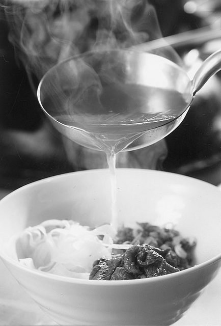
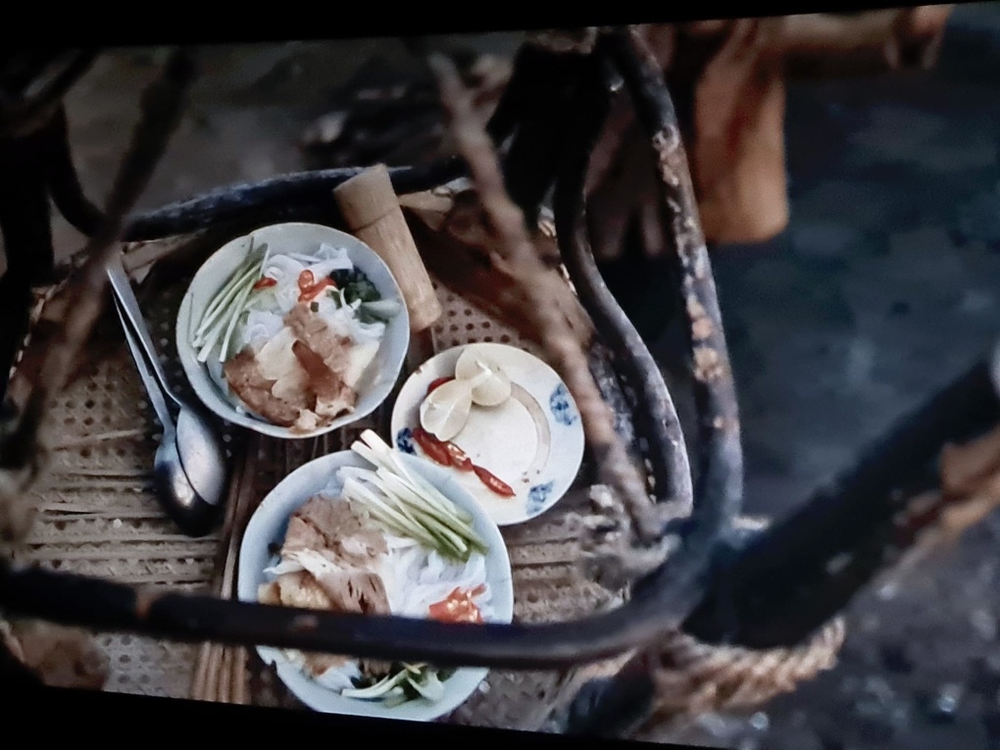
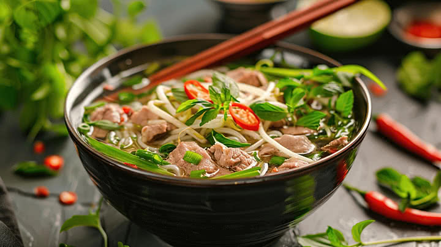

DÒNG THỜI GIAN
Hành trình phát triển của Phở

Những bước đầu hình thành
Phở được cho là hình thành vào khoảng cuối thế kỷ XIX, trong bối cảnh xã hội Việt Nam có nhiều thay đổi. Từ những món ăn bình dân, phở dần tạo nên một phong cách riêng.

Đầu thế kỷ XX
Phở bắt đầu xuất hiện và trở nên quen thuộc hơn trong đời sống người dân Hà Nội. Những hàng phở bình dân dần trở thành một phần của nhịp sống phố phường.

Hình thành phong vị Phở Hà Nội
Qua nhiều năm phát triển, phở Hà Nội dần hình thành những đặc điểm riêng trong cách nấu và thưởng thức. Nước dùng được chú trọng, cùng với bánh phở, thịt và các loại gia vị đi kèm.

Cuối thế kỷ XX
Phở không chỉ phổ biến tại Hà Nội mà còn được biết đến ở nhiều tỉnh thành khác. Các cách chế biến và thưởng thức phở cũng ngày càng đa dạng hơn.

Phở trở thành biểu tượng ẩm thực
Ngày nay, phở đã trở thành một trong những món ăn tiêu biểu của ẩm thực Việt Nam. Phở Hà Nội vẫn giữ được nét đặc trưng riêng và tiếp tục được nhiều thế hệ yêu thích.